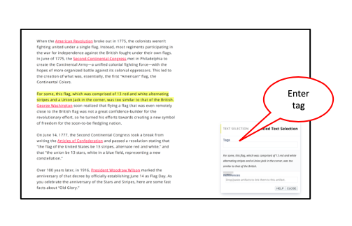

A tag is a word or phrase you use to classify information, e.g. interesting, hypothesis; plan for a task, e.g., review, look up,...etc. nStudy assigns an “Important” tag for you. Change it to use a more helpful tag.
- Once you choose “Create Selection...”, you will have the option to tag your selection.
- Click in the tag box to see tags already created. You can create a new tag by typing in the tag box, then hitting Enter.
